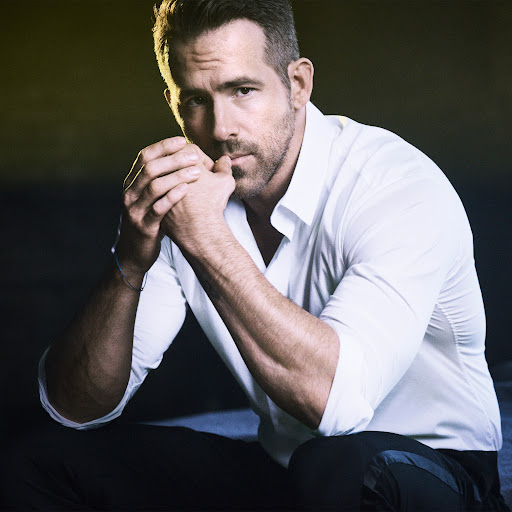

featured artist
Listing Advanced Search
Ryan Reynolds
When Mr. Giorgio Armani set out to find a new face of the iconic Italian brand’s newest sparkling scent, Armani Code Absolu, he wanted someone with “the right dose of irony.” And that is something the designer’s ultimate choice for the job, Ryan Reynolds, has in spades. “I hope to eventually call Mr. Armani, ‘Papa,’” joked the 42-year-old Canadian actor and producer when announcing the collaboration on Instagram earlier this month.
From his decades-long career, most recently spearheading a new, subversive kind of Marvel superhero in the Deadpool franchise, to his personal life, which finds him and wife Blake Lively often playfully sparring on social media, it’s no secret that he doesn’t take himself too seriously. For one, he’ll be the first to admit that he wasn’t the brilliant brains behind the latest fragrance in the Armani Code roster, with its sensual bouquet of mandarin, vanilla, and base tonka bean (that would be perfumer Antoine Maisondieu). “Scent really is so powerful and intrinsic to memories that you don’t even really know are indelible until it strikes a chord, but I’m not an expert, I just know what I like,” he explains, adding that he left his mark on the collaboration most conspicuously by joining forces with The Handmaid's Tale director Reed Morano on the campaign’s forthcoming short film, out next month.
Unsurprisingly, Reynold’s lighthearted attitude extends to his streamlined grooming regimen. “I find something that I like and stick to it,” he says. “That’s really the 30,000-foot view of my life because every day is different, so I like as many variables to stay the same as possible.” But when push comes to shove, he will, for the record, go rogue and raid Lively’s beauty stash. “On a super-cold winter day, sometimes I’ll steal whatever my wife has in her drawers and slather it on,” he admits. “I may not know exactly what it is, but I do make sure it says moisturizer.”
Shooting Deadpool, however, is a different story. Having to wear extensive facial prosthetics, his skin-care regimen calls for a bit—make that a lot—more TLC. “They rip up your face as they’re coming off,” he explains of the special effects makeup. “So I basically do whatever the lead artists tell me to do, including using this special moisturizer meant for burns. It’s a bit more intense.” His medical-grade healing elixir of choice? Edap, a soothing, fast-absorbing emollient infused with a potent mix of Vitamin A, E, and D oils. “I work in showbiz, so I should go next level and have some really extensive, nuanced routine, but besides that, I don’t,” he laughs. Similarly, for his hair, he uses whatever styling mud is at arm’s length and trims his beard once it gets “a little too living-in-a-one-room-shack-in-the-woods-for-three-months,” he says.
And when it comes to self-care, prioritizing sleep while raising two young daughters, James, 4, and Inez, 2, is vital. “As any parent will say, sleep is a like a huge commodity that doesn’t come as often as one might like,” he says. “Usually I find that if I don’t have to work or catch up on something, I usually try to sleep at the same time as the kids.” But most of all, for Reynolds, who opened up about his lifelong struggle with anxiety last year, maintaining a sense of well-being and keeping himself grounded while in the spotlight is most essential to find peace of mind—especially as he gets older. “There are so many bizarre and unhealthy standards placed on so many people,” he says. “And not just in the public eye, but in regular life outside of that world. In terms of aging gracefully, I never bemoan a birthday. We all want to be old people at one point, so you may as well enjoy getting there. I think it’s sexy to embrace [aging], rather than combat it.” And with Reynolds’s healthy outlook on life, and Code Absolu now a part of his everyday repertoire, his Valentine’s Day festivities with Lively tonight are sure to be the couple’s most romantic yet.


